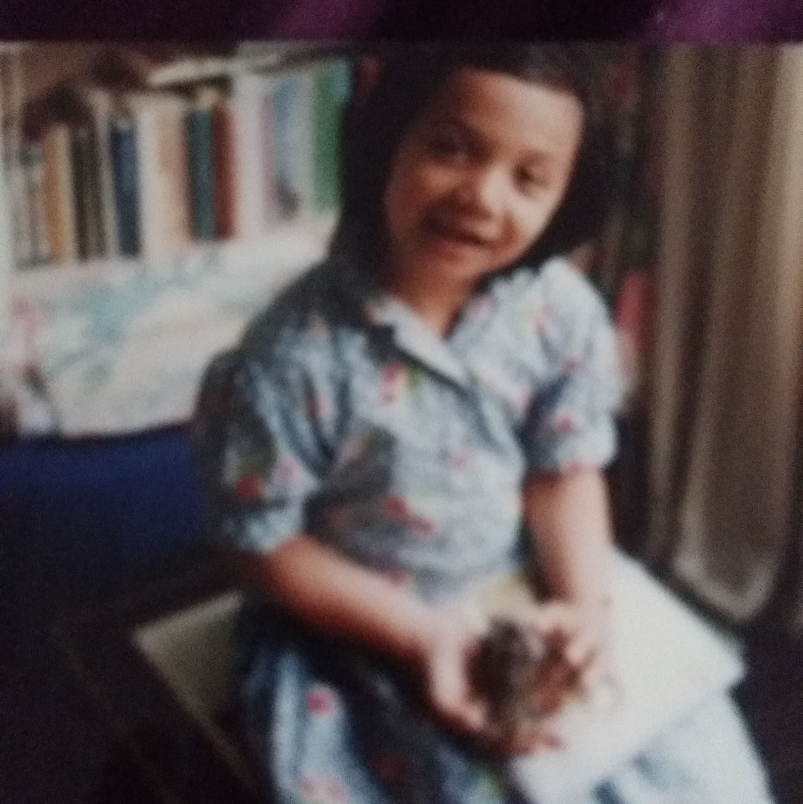
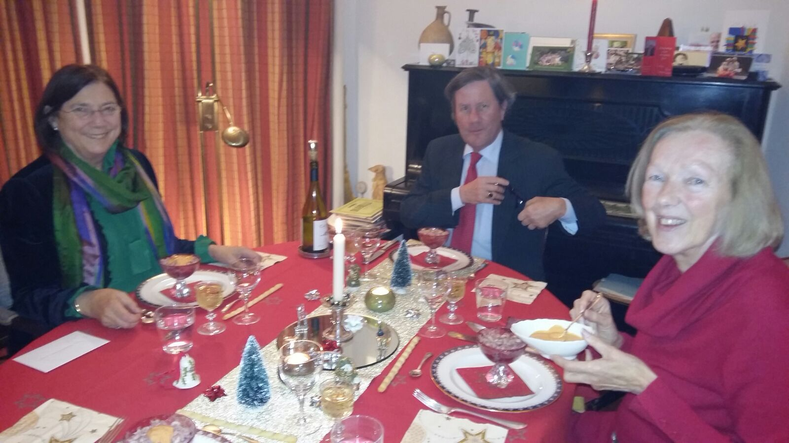
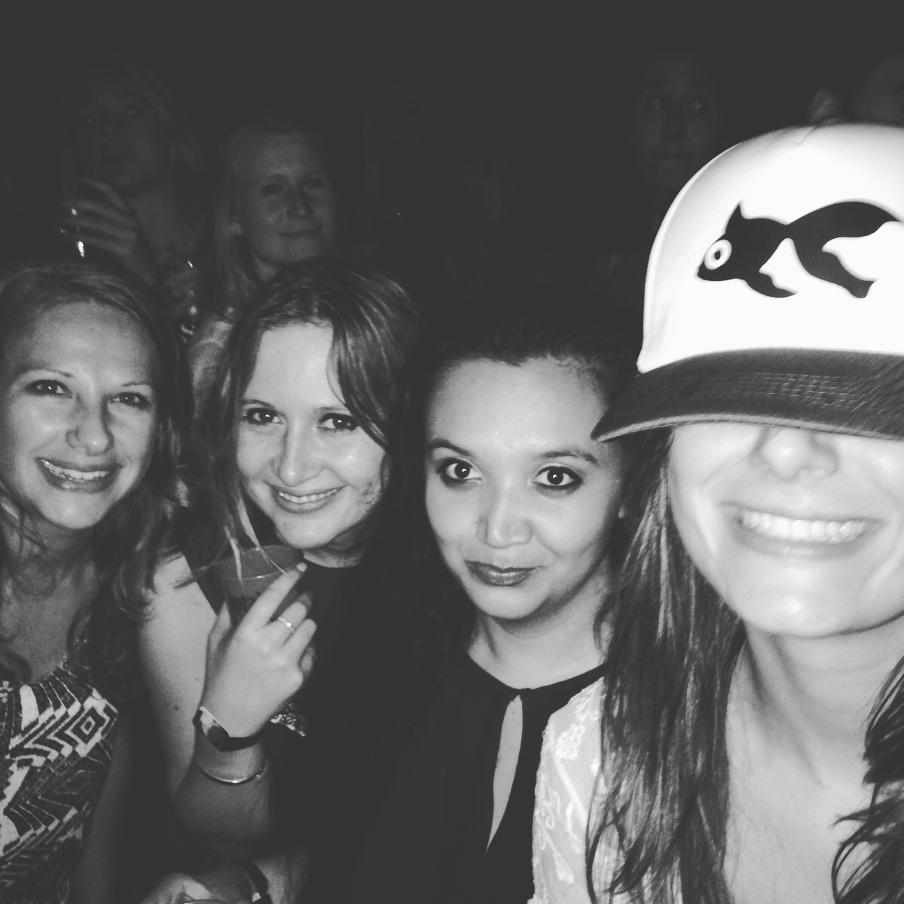
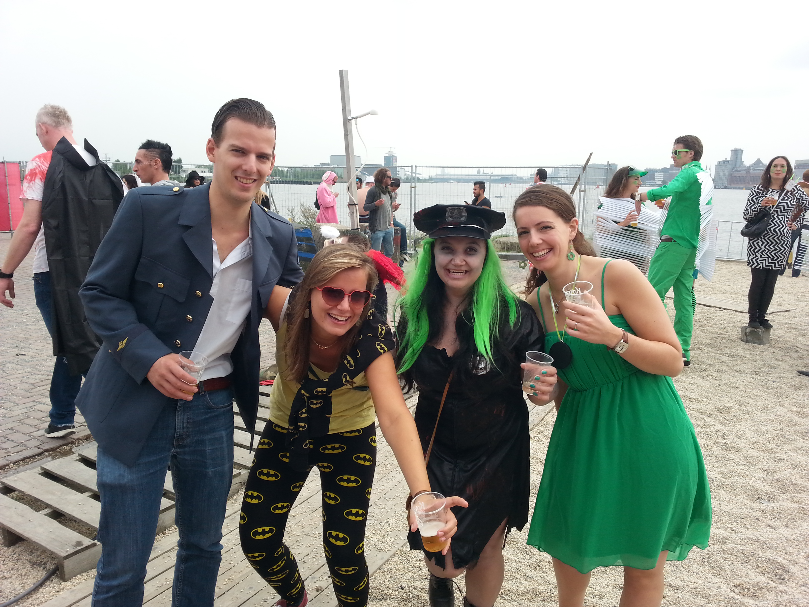
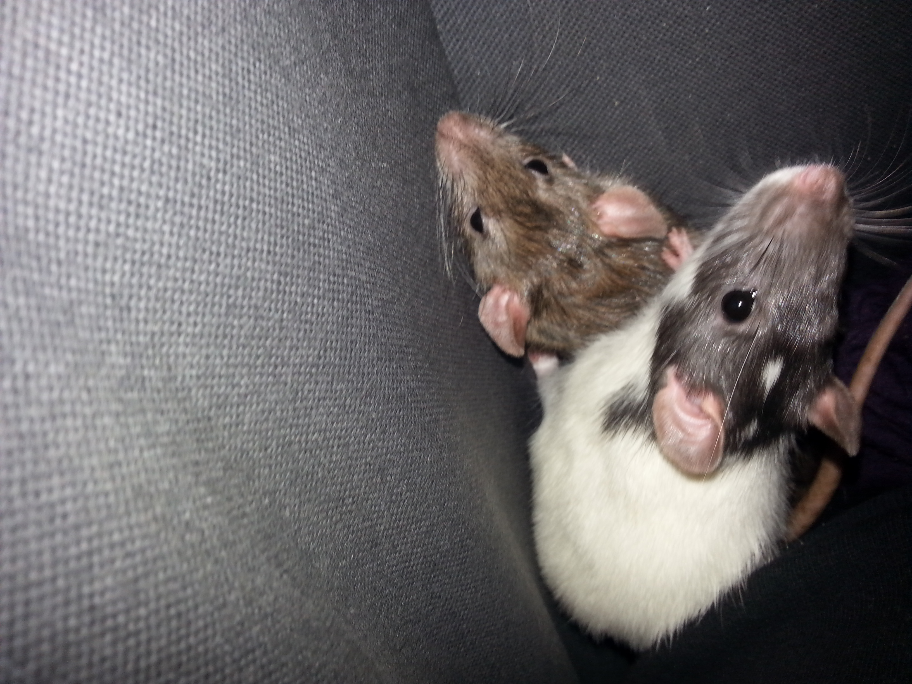
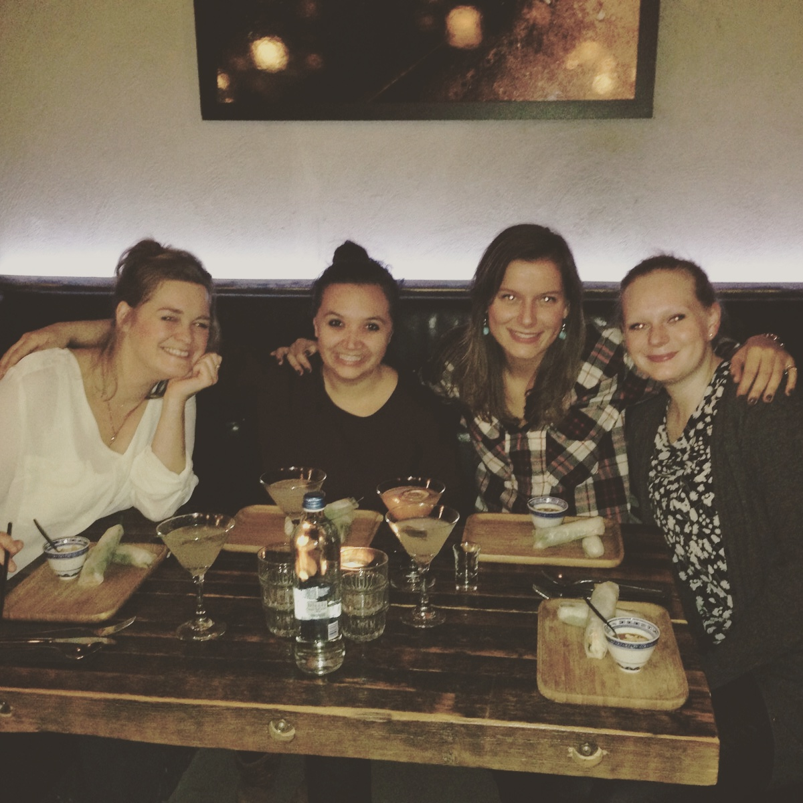

Ik ben Beatriz en ik woon in Den Haag. Ik werk bij Bibliotheekservice Passend Lezen, een bibliotheek voor mensen met een leesbeperking. De organisatie is gevestigd in Den Haag aan het Malieveld.
In mijn vrije tijd ga ik graag leuke dingen doen met vriendinnen, naar de bios, uit eten, een museum bezoeken of gewoon lekker thuis met elkaar kletsen. Ik knutsel en teken graag en ik vind het leuk om af en toe een nieuw recept uit te proberen. Momenteel volg ik een cursus Webdesign wat ik erg interessant vind.Op deze website kom je meer over mij te weten en kun je in contact met mij komen.Mocht je nog vragen hebben, dan kun je die stellen via het contactformulier op de pagina 'contact'.